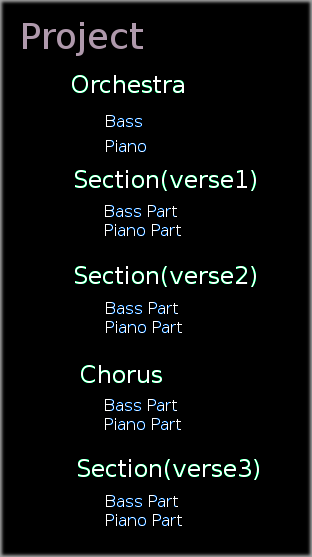

CYCO is a LISP based MIDI composition language. It borrows somewhat from Common Music but has a more restricted usage domain.
Compositions are defined by creating a Project, which establishes several global properties and is composed of a series of Sections. A Section corresponds to a major division of the composition, such as a verse or chorus. Sections are composed of Parts, which combines one or more instruments with instructions for what events to produce. Once defined a project is rendered to a standard MIDI file.
There are many ways to define a part. Some are highly specific, such as a metronome, others are more general. The code samples below illustrate a few basic features using different types of parts. These illustrations are not intended as working examples, detailed explanations are provided elsewhere.
;; A FIXED-PART specifies explicit MIDI events.
;;
;; First 4 bars of Mary Had a Little Lamb using a FIXED-PART.
;;
(project 'mary :timesig (timesig :beats 2 :unit 'q :tempo 90)
(section verse)
(fixed-part piano
:events '((:time (1 1 1) :key a4 :dur e. :amp mf :channel 1)
(:time (1 1 3) :key g3 :dur s)
(:time (1 2 1) :key f3 :dur e)
(:time (1 2 3) :key g3)
(:time (2 1 1) :key a3 :dur e) ;; bar 2
(:time (2 1 3) :key a3)
(:time (2 2 1) :key a3 :dur q)
(:time (3 1 1) :key c4 :dur e) ;; bar 3
(:time (3 1 3) :key c4)
(:time (3 2 1) :key c4 :dur q)
(:time (4 1 1) :key a3 :dur e) ;; bar 4
(:time (4 1 3) :key c4)
(:time (4 2 1) :key c4 :dur q)))
;; A more flexible type of part is called an EPART.
;; An EPART looks superficially like a FIXED-PART but is
;; considerably more powerful.
;;
(project 'mary :timesig (timesig :beats 2 :unit 'q :tempo 90)
;; Define an "orchestras" of a few basic instruments.
;; The piano plays staccato and softly
;; The organ is transposed down an octave
;;
(param piano (create-instrument 'piano :channel 1 :program-number 1
:duration-map #'(lambda (d)(* 0.5 (metric d)))
:amplitude-map #'(lambda (a)(* 0.5 (amplitude a)))))
(param organ (create-instrument 'piano :channel 2 :program-number 7
:keynumber-map #'(lambda (k)(- (keynumber k) 12))))
(section verse)
(programs verse-programs '(1 1 1) (list piano organ)) ;; send MIDI program change
(epart epart-example (list piano organ)
:events '((:time (1 1 1) :key a4 :dur e. :amp mf)
(:time (1 1 3) :key g3 :dur s)
(:time (1 2 1) :key f3 :dur e)
(:time (1 2 3) :key g3)
(:time (2 1 1) :key a3 :dur e) ;; bar 2
(:time (2 1 3) :key a3)
(:time (2 2 1) :key a3 :dur q)
(:time (3 1 1) :key c4 :dur e) ;; bar 3
(:time (3 1 3) :key c4)
(:time (3 2 1) :key c4 :dur q)
(:time (4 1 1) :key a3 :dur e) ;; bar 4
(:time (4 1 3) :key c4)
(:time (4 2 1) :key c4 :dur q)))
For both FIXED-PART and EPART it is not necessary to repeat event parameters which do not change between events. For example the key dynamic of MF is specified once and remains the same for all subsequent events.
The only obvious difference is that EPART takes a list of instruments and FIXED-PART does not. With EPART there is no need to specify MIDI channels in the event list and all instruments in an EPART are "layered"
What is not obvious is that a "single" EPART event can produce a complex series of MIDI events.
;; Three ways to produce a C Major chord using EPART.
;;
(epart foo piano
:events '((:time (1 1 1) :key c4) ; Explicit c major chord,
( :key e4) ; time defaults to previous
( :key g4) ; value.
(:time (0 1 0) :key c4 :chord (0 4 7)) ; Chord by interval list.
(:time (0 2 0) :key c4 :chord [maj]))) ; Chord by name.
The final event uses the chord dictionary, which may be modified by the user.
(chord! '[cluster] '(0 1 2 3 4 5 6 7 8 9 10 11 12))
(chord! '[cluster] (range 0 12)) ; or more concisely
(epart foo piano
:events '((:time (1 1 1) :key c4 :chord [cluster])))
Chords may be inverted and extended using an inversion clause.
;; Produce 1st inversion of a major chord.
;; The list (0 24) generates notes in the original octave
;; and 2 octaves higher.
(epart foo piano
:events '((:time (1 1 1) :key c4 :chord [maj] :inversion (1 (0 24)))))
A strum clause is used to arpeggiate chords.
;; Produce chord notes every 0.1 seconds.
;;
(epart foo
:events '((:time (1 1 1) :key c4 :chord [maj] :strum 0.1)))
;; Strum can produce complex effects. The first two chords are played
;; in the 'up' (reversed) direction. The third chord is played
;; in the 'down' direction. The direction of every fourth chord is
;; selected randomly.
;;
(epart foo2 piano
:events '((:time (1 1 1) :key c4 :chord [maj] :strum (0.1 (:up :up :down :random)))
(:time (1 2 1) :key a4 :chord [min])
(:time (1 3 1) :key g4 :chord [maj])
(:time (1 4 1) :key f4 :chord [maj])))
Parts are not limited to MIDI note events, they may also produce pitch bend, channel pressure, controller and program change events. The following EPART generates a sequence of modulation wheel events.
(epart foo3 piano
:events '((:time (1 1 1) :to (2 1 1) :cc :wheel :start 0.0 :end 1.0)))
A completely different type of part, called a QBALL, generates events by a kind of recombinant shuffling of parameters.
;; Mary Had A Little Lamb using a QBALL
(project 'mary :timesig (timesig :beats 2 :unit 'q :tempo 90)
(param piano (create-instrument 'piano :channel 1 :program-number 1))
(param vibes (create-instrument 'vibes :channel 3 :program-number 5))
(param organ (create-instrument 'organ :channel 2 :program-number 13))
(section verse)
(qball foo (list piano vibes)
:cue '((1 1 1)(1 1 3)(1 2 1)(1 2 3)
(2 1 1)(2 1 3)(2 2 1)
(3 1 1)(3 1 3)(3 2 1)
(4 1 1)(4 1 3)(4 2 1))
:key '(a4 g3 f3 g3
a3 a3 a3
c4 c4 c4
a3 c4 c4)
:dur '(e. s e e
e e q
e e q
e e q)
:amp '(fff mf))
The cue list determines the total number of events. Since the amp list only has two values, they are reused in a cyclical pattern. Odd notes are played at amplitude FFF, even notes at MF. In the above example the piano and vibes are layered; both instruments play every note. In the following example the instruments are used in a cycle, the piano plays odd notes, the vibes even.
(qball foo (cycle :of (list piano vibes))
:cue ....)
More complex patterns are possible. In the following code the piano is used for the first 3 notes, and then the vibes and organ alternate for the remaining notes.
(qball foo (line :of (list piano piano piano (cycle :of (list vibes organ))))
:cue...)
QBALL is particularly useful with percussion instruments.
(project 'foo)
(param snare (create-instrument 'snare
:channel 10
:keynumber-map #'(lambda (k)
(cond ((eq k 'hit) 36)
((eq k 'rim) 38)
((eq k 'flam) 39)
(t 36)))))
(section verse)
(qball snare-part snare
:cue '((1 1 1)(1 2 1)...)
:key '(hit hit rim hit flam)
:amp '(fff f f ))